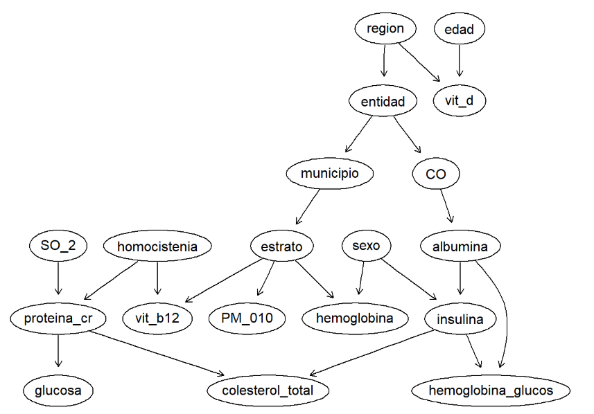
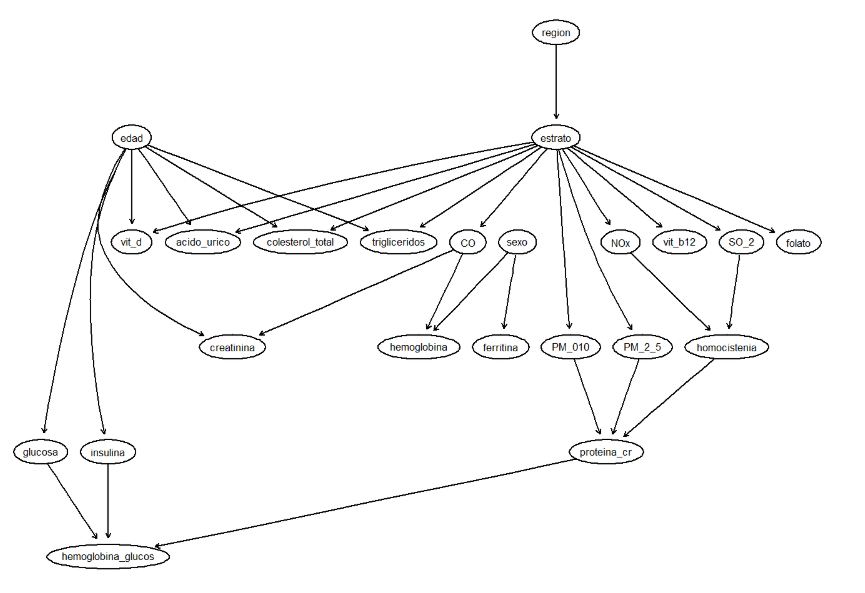
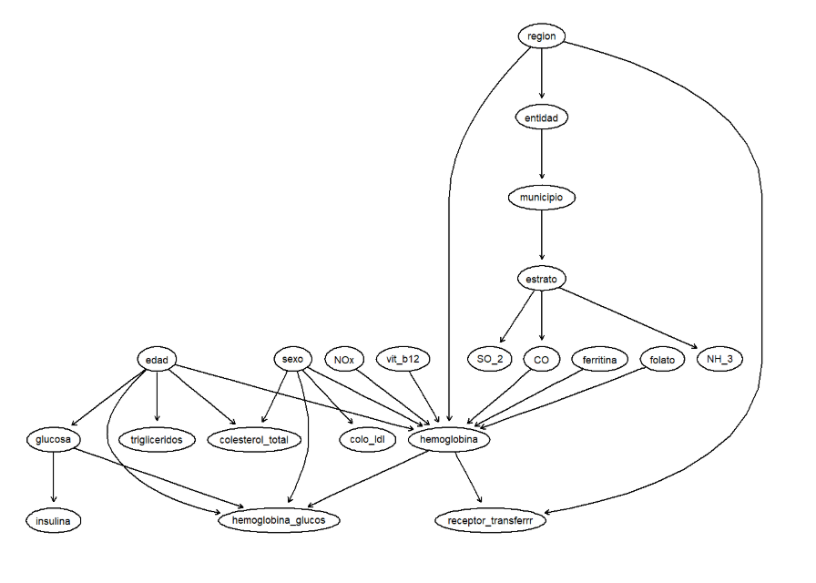
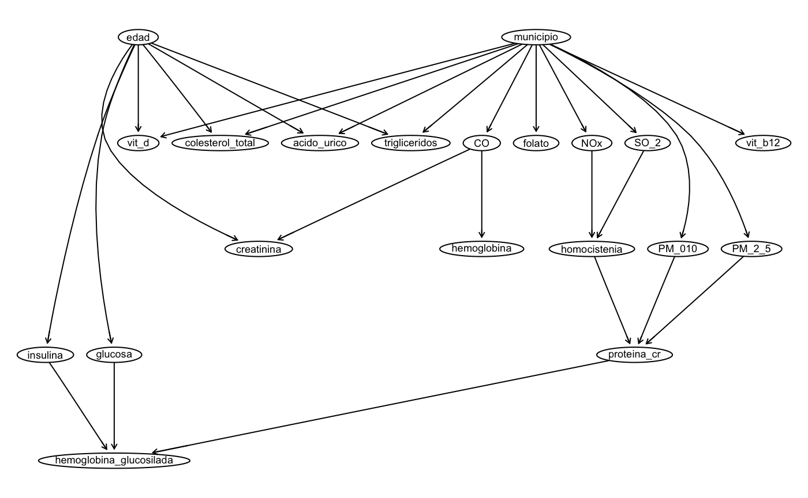

Contaminación Ambiental y Salud en México
Este proyecto explora la relación entre la exposición a contaminantes ambientales y la salud de la población mexicana. Utilizando datos de la Encuesta Nacional de Salud y Nutrición (ENSANUT) 2022 y datos de calidad del aire de SEMARNAT, se construye y evalúa un modelo de Redes Bayesianas Graussianas (GBN). La estructura de la red se propone con base en la opinión de especialistas en el área, validando su desempeño individual con métricas como las pruebas BIC y AIC. El modelo resultante se utiliza para responder a preguntas de investigación sobre cómo la exposición a contaminantes impacta en biomarcadores específicos. Los hallazgos buscan contribuir a una mejor comprensión de los factores que influyen en la salud pública y a informar estrategias para mitigar los efectos de la contaminación atmosférica.
redes bayesianas gaussianas, bnlearn, contaminación del aire, codificación
1 Introducción
Este proyecto de investigación se enfoca en analizar la relación entre los contaminantes atmosféricos y sus efectos en la salud humana en México. A través de este artículo se busca identificar y cuantificar la influencia de los factores ambientales sobre biomarcadores específicos en la población mexicana.
Para ello, se integraron conjuntos de datos de fuentes gubernamentales confiables. Los datos de la Encuesta Nacional de Salud y Nutrición (ENSANUT) 2022 proporcionan información socio-demográfica y biológica detallada sobre la muestra de estudio. Esta información se complementa con datos de calidad del aire actualizados de la SEMARNAT.
La metodología con la que se aborda este artículo consiste en la construcción de Redes Bayesianas Gaussianas (GBN), con las que será posible representar y analizar las complejas relaciones de dependencia entre las variables. Con la colaboración de expertos en medicina y química, se validarán y construirán al menos tres estructuras de red distintas. Para comparar su rendimiento, se evaluará su calidad con métricas como el BIC y el AIC. Finalmente, se utilizará el modelo más robusto para responder a preguntas clave de interés sobre la salud pública, lo que podría contribuir al desarrollo de futuras políticas de salud y medio ambiente.
2 Metodología
2.1 Construcción de la base de datos
Se crearon dos dataframes a partir de los datos originales: demográfico, con información socio-demográfica como folio, estrato, región y entidad/municipio, y sangre, con folio y distintos biomarcadores. Estos se unen mediante la columna de folio que tienen en común, combinando datos demográficos y de biomarcadores de sangre por persona. Después, se filtró el archivo de calidad del aire para limpiar y estandarizan los nombres de entidad y municipio y que coincidan con el formato de los datos ambientales. Finalmente, se unieron los datos de los biomarcadores y la calidad del aire por entidad y municipio, obteniendo el dataframe final, que integra información socio-demográfica, biomarcadores sanguíneos y calidad del aire listos para el análisis.
Se realizó la limpieza de los datos mediante la transformación de variables a formato numérico y la corrección de valores atípicos. Debido a que más de 15 variables importantes para las estructuras DAG presentaban datos faltantes, y muchas tenían más del 50% de información incompleta, no era posible eliminar observaciones. Por ello, se optó por la imputación con la mediana, de manera que se pudieran utilizar para el análisis posterior.
2.2 Redes bayesianas propuestas
Se consultó a tres expertos en áreas de la salud y bioquímica, quienes contribuyeron al proyecto proporcionando su conocimiento especializado para proponer estructuras DAG que representaran las posibles relaciones de dependencia entre las variables. Gracias a estas entrevistas, se obtuvieron tres redes diferentes, reflejando distintas perspectivas sobre las interacciones entre los indicadores de salud, factores demográficos y ambientales. Las variables que se utilizaron para plantear los modelos DAG son las siguientes:
desc_ent1 = entidad
desc_mun1 = municipio
h0302 = sexo
h0303 = edad
estrato = estrato
region = region
hb02 = hemoglobina
valor_AC_URICO = acido_urico
valor_ALBU = albumina
valor_COL_HDL = col_hdl
valor_COL_LDL = colo_ldl
valor_COLEST = colesterol_total
valor_CREAT = creatinina
valor_GLU_SUERO = glucosa
valor_INSULINA = insulina
valor_PCR = proteina_cr
valor_TRIG = trigliceridos
valor_HB1AC = hemoglobina_glucos
valor_FERRITINA = ferritina
valor_FOL = folato
valor_HCST = homocistenia
valor_STFR_FEB23 = receptor_transferrr
valor_VIT_B12 = vit_b12
valor_VIT_D = vit_d
SO_2 = SO_2
CO = CO
NOx = NOx
COV = COV
PM_010 = PM_010
PM_2_5 = PM_2_5
NH_3 = NH_32.2.1 DAG 1: Propuesta por el nutriólogo y especialista en ciencias médicas Alberto Bricio.

En esta estructura las variables socio-demográficas, como el sexo y la edad, influyen directamente en los biomarcadores. Por ejemplo, la producción de hemoglobina ocurre en función del sexo y el \(PM_{10}\) se relaciona con la densidad de población, representada por el estrato social. Se postula que la exposición a contaminantes atmosféricos como el \(SO_2\) y el \(CO\) influye directamente en la salud. El \(SO_2\) se asocia con el nivel de proteína C reactiva y homocisteína, mientras que el \(CO\) impacta en los niveles de albúmina. Finalmente, estas interacciones se reflejan en la salud metabólica y nutricional: la albúmina y la insulina influyen en la hemoglobina glicosilada y el colesterol total, mientras que la edad y la región se relacionan con los niveles de vitamina D.
2.2.2 DAG 2: Propuesta por el biomédico y PhD candidate en human genetics Asbiel Garibaldi.

En la segunda estructura se explora la relación entre la exposición a contaminantes ambientales, el estilo de vida, los factores socio-demográficos y los biomarcadores de salud obtenidos mediante muestras de sangre. Se propone que la contaminación del aire por partículas finas (\(PM_{2.5}\) y \(PM_{10}\)) causa un perfil inflamatorio en el cuerpo, lo que se refleja en niveles elevados de proteína C reactiva. A largo plazo, esta inflamación crónica podría influir en los niveles de hemoglobina glicosilada.
Además, se plantea que la exposición a óxidos de nitrógeno (\(NOx\)) y dióxido de azufre (\(SO_2\)) genera estrés oxidativo que eleva la homocisteína y exacerba los procesos inflamatorios. Por otro lado, la exposición al monóxido de carbono (\(CO\)) afecta la oxigenación, lo que se refleja en una disminución de la hemoglobina y en la función renal, evaluada con la creatinina.
En cuanto a los factores de estilo de vida, la dieta juega un papel crucial. Se propone que el consumo de carne roja está asociado con niveles elevados de ácido úrico, mientras que una dieta alta en grasas se correlaciona con el colesterol y los triglicéridos. Un consumo bajo de frutas y verduras se refleja en niveles deficientes de folato, vitamina B12 y vitamina D. La edad y el sexo también se consideran aspectos relevantes en el desarrollo de enfermedades: la edad se relaciona directamente con los niveles de glucosa e insulina, mientras que el sexo influye en la ferritina y la hemoglobina. Finalmente, se postula que vivir en zonas urbanas (representado por el estrato social) influye directamente en el perfil metabólico e inflamatorio debido a una mayor exposición a la contaminación.
2.2.3 DAG 3: Propuesta por el médico geriatra Jesús Francisco Gutiérrez Suárez.

Este modelo establece que las variables demográficas, como el sexo y la edad, son los nodos principales que influyen en los perfiles metabólicos, afectando directamente los niveles de colesterol LDL, colesterol total, triglicéridos y glucosa.
El modelo propone que la exposición a contaminantes del aire, como el monóxido de carbono (CO), el dióxido de azufre (\(SO_2\)) y el amoníaco (\(NH_3\)), está determinada por el estrato socioeconómico y la región. La hemoglobina es un biomarcador clave en esta estructura, ya que se encuentra en el centro de las dependencias, siendo influenciada por una combinación de factores ambientales (\(CO\), \(NOx\)), demográficos (sexo, edad, región) y nutricionales (ferritina, folato, vitamina B12). Finalmente, los indicadores de salud a largo plazo, como la hemoglobina glicosilada, dependen de las interacciones entre el sexo, la edad y los niveles de hemoglobina y glucosa.
En resumen, los tres modelos de DAGs coinciden en estructurar las variables sociodemográficas como puntos de partida, de modo que sexo, edad y región siempre aparecen como nodos iniciales, y en todos los casos se observa que variables metabólicas como glucosa, colesterol total, hemoglobina o insulina son consideradas desenlaces intermedios o finales. Sin embargo, difieren en cómo se asignan los papeles de mediación: por ejemplo, en un modelo estrato funciona como nexo entre municipio y hemoglobina, reflejando un interés en capturar determinantes sociales de la salud; mientras que en otro se enfatiza la ruta bioquímica al ligar proteína C reactiva con glucosa y colesterol, sugiriendo una perspectiva más biomédica que prioriza la inflamación como factor central. De forma similar, un modelo coloca a la albúmina como variable puente entre \(CO\) y hemoglobina glicosilada, mientras que en otro este rol lo asume la insulina, mostrando dos formas distintas de concebir la relación entre metabolismo energético y marcadores de función hepática. Estas diferencias probablemente se deben a que cada investigador pondera de manera distinta la evidencia previa: quienes priorizan variables sociales construyen DAGs más jerárquicos con capas de contexto (municipio, estrato), mientras que quienes priorizan la fisiología molecular trazan rutas más directas entre biomarcadores. En resumen, los puntos en común muestran un consenso en las variables clave, pero las divergencias reflejan enfoques disciplinarios y prioridades teóricas distintas.
2.3 Ajuste de cada modelo a una GBN y métricas BIC y AIC
A partir de cada DAG, se procedió a realizar su ajuste a una Red Bayesiana Gaussiana utilizando la librería bnlearn de R. Sin embargo, en este lenguaje las GBN solo pueden ajustarse con variables continuas; no es posible incluir directamente variables discretas como sexo, estrato o región. Por ello, los intentos de ajustar una GBN con estas variables fallaron, y los criterios de información Bayesiano y de Akaike (BIC y AIC) solo funcionan para nodos continuos. Estas redes están diseñadas para trabajar con variables que siguen una distribución gaussiana, es decir, continuas. Los modelos DAG que se propusieron tienen condicionales gaussianas mixtas, las CG-BN (condicionales gaussianas mixtas) en bnlearn no son soportadas para ajuste automático con variables discretas, al menos sin usar paquetes avanzados.
Ante lo anterior, se convirtieron las variables discretas en un factor, aunque esto no cambia el hecho de que su naturaleza es categórica. Ya que los modelos GBN puros asumen que todas las relaciones entre las variables son lineales y pueden ser representadas por regresiones lineales, lo que no es posible con variables discretas o categóricas, probar esta técnica tampoco produjo buenos resultados. Después de una investigación más exhaustiva, se encontró que los intentos de ajustar las estructuras DAG propuestas directamente como una GBN pura fallarán en R porque incluyen variables categóricas, y los criterios de información BIC o AIC no son compatibles con nodos discretos, lo que hace necesario explorar enfoques más avanzados o alternativos para el análisis.
2.3.1 Selección del modelo
Al comparar los valores obtenidos, se eligió el Modelo 2, ya que presentó el BIC y AIC más alto, lo que indica un mejor equilibrio entre ajuste del modelo y complejidad.

Este modelo refleja relaciones plausibles desde un punto de vista epidemiológico:
- Edad influye en biomarcadores como colesterol total, ácido úrico, triglicéridos y creatinina, además de estar relacionada con glucosa, insulina y vitamina D.
- Municipio concentra las conexiones con contaminantes ambientales (\(CO\), \(NOx\), \(SO_2\), \(PM_{10}\), \(PM_{2.5}\)) y micronutrientes (folato, vitamina B12), reflejando la variación espacial de exposición y condiciones ambientales.
- Variables como hemoglobina glicosilada y proteína C-reactiva aparecen al final de la red, recibiendo influencias de varios factores metabólicos y ambientales, lo que sugiere su papel como posibles variables de resultado o integración de riesgos.
En conjunto, la estructura del Modelo 2 muestra cómo las características demográficas (edad) y contextuales (municipio) actúan como determinantes principales sobre los biomarcadores de salud, lo que refuerza su pertinencia como modelo seleccionado.
2.4 Manejo de variables categóricas: el caso de sexo
Uno de los principales retos al construir redes bayesianas gaussianas con datos reales es la inclusión de variables categóricas, como sexo, región o estrato. Estos modelos están diseñados para trabajar con variables continuas, por lo que no es posible incluir directamente variables discretas sin perder validez estadística o recurrir a técnicas más avanzadas.
En este trabajo, fueron exploradas distintas alternativas para abordar este problema, ya que el sexo es una variable central por requerimiento de la tarea. Primero, se intentó discretizar variables continuas y convertir las categóricas en factores, pero esto no resolvió la incompatibilidad con la GBN pura. También se revisó la literatura sobre métodos mixtos, como el modelo condicional gaussiano (CLG) y otros enfoques más complejos, aunque no fueron implementados en este análisis por su mayor complejidad y restricciones de software.
Finalmente, para poder analizar la influencia del sexo y cumplir con el objetivo de comparar diferencias por género, se decidió estratificar la base de datos, ajustando una red separada para hombres y otra para mujeres. Esta estrategia, aunque sencilla, permitió identificar posibles diferencias en la estructura y los parámetros del modelo según sexo; sin embargo, también limita la posibilidad de analizar interacciones conjuntas entre variables categóricas y continuas.
En resumen, la imposibilidad de incluir variables categóricas en las GBN con bnlearn concluyó en comparar subgrupos por separado. Dentro del equipo se reconoce que existen alternativas metodológicas para integrar datos mixtos en redes bayesianas, pero cada una implica distintas limitaciones y complejidades.
3 Aplicación
3.1 Ajuste de los DAGs y cálculo de métricas de información
Las tres estructuras DAG propuestas inicialmente fueron ajustadas como Redes Bayesianas Gaussianas (GBN).
Debido a las limitaciones ya mencionadas —específicamente, la imposibilidad de incluir variables categóricas en un modelo GBN con bnlearn— fue necesario eliminar las variables estrato, región y sexo, manteniendo únicamente edad y municipio como nodos válidos para el ajuste.
Con estas variables continuas se procedió a calcular los criterios de información BIC (Bayesian Information Criterion) y AIC (Akaike Information Criterion) para cada una de las tres redes propuestas.
3.2 Análisis de queries y predicciones
Con el modelo seleccionado se implementaron consultas probabilísticas (queries) mediante la función cpquery de bnlearn.
El objetivo fue estimar probabilidades condicionales de variables de interés en presencia de ciertas condiciones ambientales o demográficas.
Para cada consulta:
- Se definió un evento de interés clínico o epidemiológico (ej. proteína C reactiva elevada, glucosa alta, colesterol elevado).
- Se establecieron las condiciones de evidencia (ej. exposición a contaminantes como \(PM_{2.5}\), \(NOx\) o \(SO_{2}\), o pertenecer a un grupo de edad).
- Se utilizó el método de simulación con al menos \(10^6\) muestras (n = 10^6), lo que permitió obtener estimaciones robustas y estables de las probabilidades condicionales.
3.3 Análisis por sexo (estratificación)
Con el objetivo de cumplir el requerimiento de comparar diferencias por sexo, la base de datos se dividió en dos subconjuntos: hombres y mujeres. Se ajustó una red bayesiana gaussiana por separado para cada grupo, utilizando la misma estructura DAG y las variables continuas seleccionadas. Para ambos modelos se calcularon los valores de BIC y AIC, así como los parámetros estimados de cada nodo, facilitando la comparación directa entre sexos.
3.4 Modelos no paramétricos y comparación AIC/BIC
Fue respetada la estructura causal de la DAG y se sustituyó, nodo por nodo, los modelos lineales por modelos aditivos generalizados (GAM) usando mgcv. Para cada relación padre → hijo se especificó una función suave s(·) que permite no linealidades. Por ejemplo:
vit_d ~ s(edad)
colesterol_total ~ s(edad)
CO ~ s(municipio)
proteina_cr ~ s(homocistenia) + s(PM_010) + s(PM_2_5)
Asimismo, se mantuvieron los nodos raíz como intercepto (edad ~ 1). El nodo municipio se trató como exógeno (factor), sin modelarlo como respuesta.
Para evaluar el ajuste global de la red, fueron agregados los criterios de información nodo a nodo y se reportó:
\[ \text{BIC}_{\text{bnlearn}} \;=\; \ell(\hat{\theta}; \mathbf{x}) \;-\; \frac{k}{2}\log(n), \]
Con esta convención, los valores más altos indican mejor ajuste penalizado (equivalente a menores AIC/BIC totales).
3.4.1 4.2. Resultado principal
El ajuste no paramétrico obtuvo:
| Modelo | (BIC) |
|---|---|
| DAG con modelos no paramétricos (GAM) | (-5,133,520) |
| DAG con modelos paramétricos (lineales) | (-5,176,757) |
Por tanto, el BIC no mejoró al introducir suavizadores.
4 Resultados
4.1 Resultados de BIC y AIC
Las tres estructuras DAG ajustadas fueron evaluadas con los criterios de información BIC y AIC, considerando únicamente las variables socio-demográficas continuas (edad, municipio y entidad), ya que estrato, región y sexo fueron eliminadas por los problemas ya explicados.
| Modelo | BIC | AIC |
|---|---|---|
| DAG 1 | -3324833 | -3324649 |
| DAG 2 | -5176757 | -5176453 |
| DAG 3 | -3801911 | -3801709 |
4.2 Resultados de queries probabilísticas
4.2.1 Consulta 1 · Proteína C Reactiva vs \(PM_{2.5}\)
Pregunta. ¿Cuál es la probabilidad de que una persona tenga proteína C reactiva > 10 mg/L dado que la concentración de \(PM_{2.5}\) \(\leq\) 155 μg/m³?
\[ \mathbb{P}\!\left(\text{proteina\_cr} > 0.001 \;\middle|\; PM_{2.5} \leq 155 \,\mu\text{g}/\text{m}^3\right) \]
4.2.2 Consulta 2 · Glucosa y contaminante del aire
Pregunta. ¿Cuál es la probabilidad de que una persona tenga glucosa en ayuno > 126 mg/dL dado que es mayor o igual a 50 años y está expuesta a NOx >= 40 ppb?
\[ \mathbb{P}\!\left(\mathrm{glucosa}>126\ \text{mg/dL}\ \middle|\ \mathrm{edad}\geq 50,\ NOx>=40\ \text{ppb}\right) = 0.1798456 \]
4.2.3 Consulta 3 · Colesterol total y SO₂
Pregunta. ¿Cuál es la probabilidad de que una persona tenga colesterol total > 130 mg/dL dado un nivel de SO₂ >= 80 ppb?
\[ \mathbb{P}\!\left(\mathrm{colesterol\_total}>130\ \text{mg/dL}\ \middle|\ SO_2>=80\ \text{ppb}\right) = 0.86975 \]
4.3 Comparación de modelos por sexo
- BIC para hombres: -2,427,498
- BIC para mujeres: -2,748,215
Se observaron diferencias en los parámetros de algunos nodos, como la influencia de la glucosa sobre la hemoglobina glicosilada, siendo mayor en mujeres que en hombres.
| Parámetro | Hombres | Mujeres |
|---|---|---|
| Intercepto | 4.644663 | 4.485266 |
| Glucosa | 0.008277 | 0.009983 |
| Insulina | -0.000236 | 0.001297 |
| Proteína C reactiva (proteina_cr) | 0.259740 | 0.251406 |
| Sigma (desviación estándar) | 0.486344 | 0.498629 |
Estos resultados sugieren que, para un mismo aumento en la glucosa, el incremento esperado en la hemoglobina glicosilada es mayor en mujeres que en hombres, lo que podría estar relacionado con diferencias fisiológicas.
5 Resultados
Para esta etapa se trabajó nuevamente con el DAG seleccionado, sin realizar comparaciones adicionales por sexo, ya que estas variables categóricas no forman parte del modelo ajustado.
Se aplicaron consultas probabilísticas para evaluar la relación entre biomarcadores y contaminantes ambientales, con los siguientes resultados:
La probabilidad estimada de que un individuo presente niveles elevados de proteína C reactiva bajo condiciones de PM₂.₅ menores o iguales a 155 μg/m³ es de 82.3%. Esto indica que, incluso en escenarios donde la concentración de partículas finas se mantiene por debajo de este umbral, existe una alta probabilidad de respuesta inflamatoria medida por proteína C reactiva.
En personas de 50 años o más expuestas a concentraciones de \(NOx\) iguales o superiores a 40 ppb, la probabilidad de presentar glucosa en ayuno mayor a 126 mg/dL (umbral diagnóstico de diabetes) es de 17.9%. Este resultado refleja un riesgo moderado que podría estar asociado a la combinación de edad avanzada y exposición a contaminantes.
La probabilidad de presentar colesterol total elevado en condiciones de exposición a SO₂ ≥ 80 ppb es de 86.9%. Esto sugiere una fuerte asociación entre altos niveles de dióxido de azufre y alteraciones en el perfil lipídico, lo cual es relevante para el riesgo cardiovascular.
6 Conclusiones
Para poder llevar a cabo experimientaciones con datos es de gran relevancia tener cierta noción sobre los datos con los que se están trabajando y con base en ello poder trazar los caminos más adecuados a seguir. En este caso, para la elaboración de este artículo, fue necesario la consulta con especialistas para así entender mejor las bases de datos con las que se trabaja y direccionar la investigación a un camino con mayor sentido, demostrando la suma importancia del trabajo colaborativo y multidisciplinario para la obtención de mejores resultados. El uso de redes bayesianas gaussianas permitió analizar la relación entre contaminantes ambientales y biomarcadores de salud en la población mexicana, a pesar de las limitaciones para incorporar variables categóricas de manera directa. La selección y ajuste de modelos reveló diferencias en la influencia de variables ambientales y demográficas sobre la salud, así como algunas variaciones por sexo. Estos resultados refuerzan la utilidad de los enfoques probabilísticos en salud pública y destacan la importancia de seguir explorando métodos más flexibles para integrar datos mixtos en futuros estudios.
7 Referencias
Galera Capilla, M. I. (2020). Redes bayesianas: fundamentos teóricos y uso en R (Trabajo Fin de Grado, Universidad de Almería). Repositorio Institucional UAL. https://repositorio.ual.es/bitstream/handle/10835/19116/GALERA%20CAPILLA%2C%20MARIA%20ISABEL.pdf?sequence=1&isAllowed=y